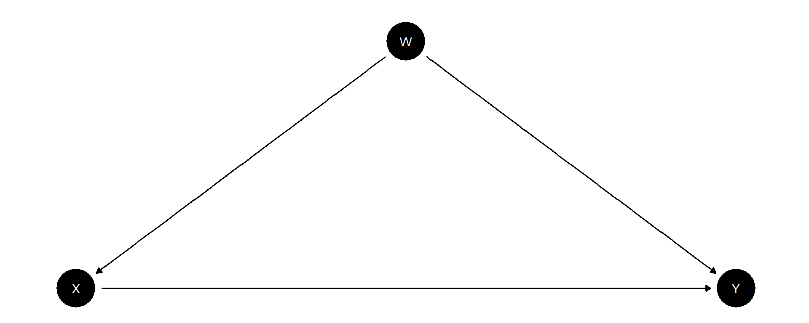

set.seed(123)
declaration <-
declare_model(
N = 1000, # Arbitrary population of 1000
U = rnorm(N), # Assuming error term is random
W = rbinom(N, 1, 0.5), +
potential_outcomes(Y ~ Z * W + U)) + # Potential Outcomes as defined in task
declare_inquiry(ATE = (mean(Y_Z_1 - Y_Z_0))) +
declare_assignment(Z = rbinom(N, 1, prob = ifelse(W == 1, 0.5, 0.2))) + # Assignment conditional on W
declare_measurement(Y = reveal_outcomes(Y ~ Z)) +
declare_estimator(
Y ~ Z, term = "Z", inquiry = "ATE", label = "Ignore W") + # Ignoring W
declare_estimator(
Y ~ Z + W, term = "Z", inquiry = "ATE",label = "Control for W") + # Controlling for W
declare_estimator(
Y ~ Z + Z * W + W, term = "Z", inquiry = "ATE",label = "Interaction") # InteractionGroup 4: Exercise 2-4
Course: Causal Inference and Experimental Design
Q 2.4
Code
model_diagnosis <-
diagnose_design(declaration,
sims = 500,
bootstrap_sims = 100)
reshape_diagnosis(model_diagnosis) %>%
kable()| Design | Inquiry | Estimator | Outcome | Term | N Sims | Mean Estimand | Mean Estimate | Bias | SD Estimate | RMSE | Power | Coverage |
|---|---|---|---|---|---|---|---|---|---|---|---|---|
| declaration | ATE | Control for W | Y | Z | 500 | 0.50 | 0.61 | 0.11 | 0.07 | 0.13 | 1.00 | 0.68 |
| (0.00) | (0.00) | (0.00) | (0.00) | (0.00) | (0.00) | (0.02) | ||||||
| declaration | ATE | Ignore W | Y | Z | 500 | 0.50 | 0.71 | 0.21 | 0.07 | 0.22 | 1.00 | 0.12 |
| (0.00) | (0.00) | (0.00) | (0.00) | (0.00) | (0.00) | (0.02) | ||||||
| declaration | ATE | Interaction | Y | Z | 500 | 0.50 | -0.00 | -0.50 | 0.11 | 0.52 | 0.04 | 0.00 |
| (0.00) | (0.00) | (0.00) | (0.00) | (0.00) | (0.01) | (0.00) |
Discussion
The role of \(W\) is defined as a confounder since it serves as a parent variable influencing both the treatment assignment \(X\) and the treatment outcome \(Y\) (see Figure 1). Failing to adjust for this confounder in the model can lead to biased estimations. Such a bias is conventionally referred to as “common cause confounding bias” or, in other words, a violation of the backdoor criterion. Therefore, it is crucial to incorporate \(W\) into the model. Utilizing simulations through DeclareDesign, we gain insights into this specific phenomenon. From the simulation results, it is evident that the model which accounts for \(W\) (“Control for W”) produces mean estimates that are considerably closer and less biased compared to the estimand than the model that neglects \(W\) (“Ignore W”). Furthermore, both the coverage and RMSE metrics suggest that the estimates from the model accounting for the confounder are less erroneous compared to those from the model that disregards it.

Q 3.4
Discussion
Assuming following:
- \(\text{ATE}_{\text{endline}} = \frac{1}{N} \sum_{i=1}^{N} \left( Y^2_i(1) - Y^2_i(0) \right)\)
- \(\text{ATE}_{\text{change}} = \frac{1}{N} \sum_{i=1}^{N} \left( \left( Y^2_i(1) - Y^1_i \right) - \left( Y^2_i(0) - Y^1_i \right) \right)\)
One can conclude that \(\text{ATE}_{\text{endline}}\) approximates an estimator, which informs us about the average size of the treatment effect on a binary outcome. However, \(\text{ATE}_{\text{change}}\) provides insight into the treatment effect as a comparison between conditions before and after treatment, indicating the effectiveness of the treatment relative to not being treated. Hence, the first scenario informs us about the strength of the treatment given the prevalence of positive outcomes, while the second scenario reveals the effectiveness of the treatment by considering the initial conditions of the treated units.
Assuming that \(ATE = ATT\) and considering \(Y^{t=1}_i\)$ and $\(Y^{t=2}_i\) in this scenario, one could describe \(\text{ATE}_{\text{endline}}\) as a between-estimator of treated units, and \(\text{ATE}_{\text{change}}\) as an in-between estimation of treated units before and after treatment, effectively combining between- and within-unit estimations.